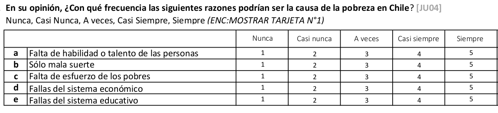
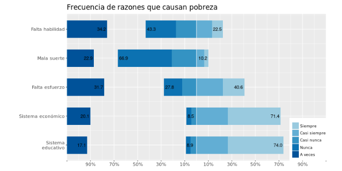
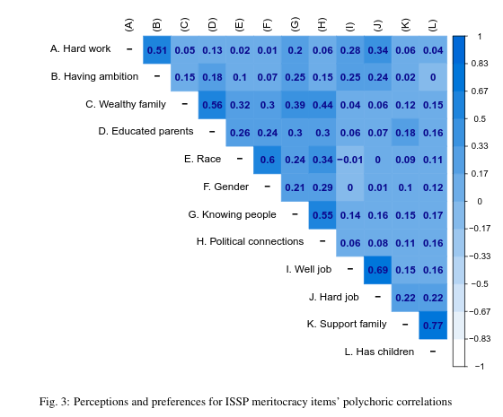
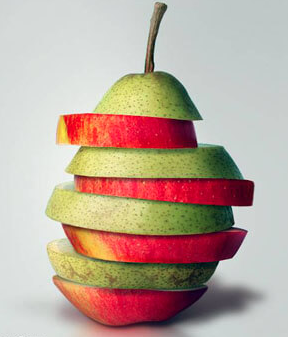
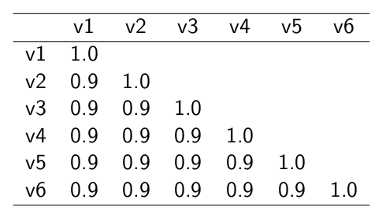
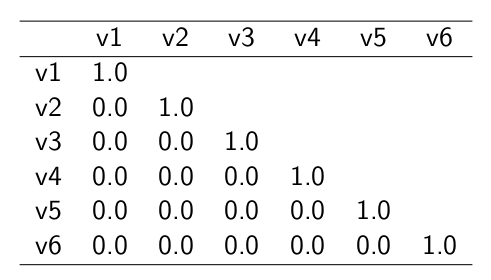
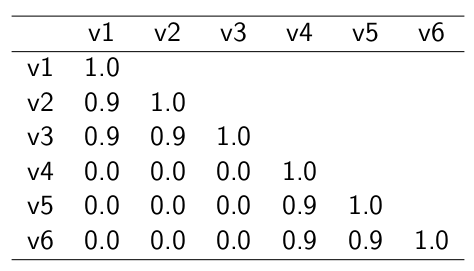

[1] 2 3 4 4 5 7 8 8
Estadística Correlacional
Inferencia, asociación, y reporte
Juan Carlos Castillo
Sociología FACSO - UChile
2do Sem 2026
correlacional.metodos-facso.org
Sesión 10:
Correlación en ordinales, matrices e índices
1. Correlación con variables ordinales
2. Matrices de correlación
3. Casos perdidos en matrices
4. Baterías, matrices y consistencia
5. Construcción de índices
Correlación de Spearman
se utiliza para variables ordinales y/o cuando se violan supuestos de distribución normal
es equivalente a la correlación de Pearson del ranking de las observaciones analizadas
es alta cuando las observaciones tienen un ranking similar
Cálculo Spearman
se le asigna un número de ranking a cada valor
el valor más bajo obtiene el mayor ranking, y el más alto el menor
en caso de valores repetidos se produce un “empate”, y entonces el ranking se promedia.
Ejemplo: variable Educación
Como estos valores están ordenados de menor a mayor, en principio los valores de ranking serían:
8 7 6 5 4 3 2 1.
Pero, hay un par de empates
el valor 4 está repetido y corresponden a los ranking 6 y 5, por lo tanto a ambos se les asigna el promedio de estos rankings: 5,5
lo mismo sucede con el valor 8 en los rankings 2 y 1, por lo tanto a ambos se les asigna el valor 1,5
Ranking y correlación
educ ing educ_rank ing_rank
1 2 1 8.0 8.0
2 3 3 7.0 6.5
3 4 3 5.5 6.5
4 4 5 5.5 4.0
5 5 4 4.0 5.0
6 7 7 3.0 3.0
7 8 9 1.5 2.0
8 8 11 1.5 1.0[1] 0.9394112Cálculo directo en R
El coeficiente de correlación de Spearman no es más que una correlación de Pearson del ranking de las variables
Correlación Tau de Kendall
Recomendado cuando hay un set de datos pequeños y/o cuando hay mucha repetición de observaciones en el mismo ranking
Se basa en una comparación de pares de observaciones concordantes y discordantes
Tau de Kendall — ejemplo paso a paso (10 pares)
Datos (5 casos ⇒ 10 pares de comparaciones)
| Caso | X | Y |
|---|---|---|
| P1 | 1 | 3 |
| P2 | 2 | 1 |
| P3 | 3 | 4 |
| P4 | 4 | 5 |
| P5 | 5 | 2 |
\(Pares=\frac{n(n-1)}{2}=\frac{5*4}{2}=10\)
Enumeración de pares y clasificación
- pares concordantes: van en la misma dirección
- pares discordantes: van en la dirección contraria
| # | Par | (Xi, Yi) | (Xj, Yj) | ΔX | ΔY | sgn(ΔX) | sgn(ΔY) | Clasificación |
|---|---|---|---|---|---|---|---|---|
| 1 | (P1,P2) | (1,3) | (2,1) | +1 | -2 | + | - | Discordante |
| 2 | (P1,P3) | (1,3) | (3,4) | +2 | +1 | + | + | Concordante |
| 3 | (P1,P4) | (1,3) | (4,5) | +3 | +2 | + | + | Concordante |
| 4 | (P1,P5) | (1,3) | (5,2) | +4 | -1 | + | - | Discordante |
| 5 | (P2,P3) | (2,1) | (3,4) | +1 | +3 | + | + | Concordante |
| 6 | (P2,P4) | (2,1) | (4,5) | +2 | +4 | + | + | Concordante |
| 7 | (P2,P5) | (2,1) | (5,2) | +3 | +1 | + | + | Concordante |
| 8 | (P3,P4) | (3,4) | (4,5) | +1 | +1 | + | + | Concordante |
| 9 | (P3,P5) | (3,4) | (5,2) | +2 | -2 | + | - | Discordante |
| 10 | (P4,P5) | (4,5) | (5,2) | +1 | -3 | + | - | Discordante |
Conteo
- Concordantes \(C = 6\) → 2,3,5,6,7,8
- Discordantes \(D = 4\) → 1,4,9,10
- Empates \(T_x = 0\), \(T_y = 0\)
Cálculo de \(\tau\)
Número total de pares: \(C + D + \text{(empates)} = 6 + 4 + 0 = 10\).
Tau-a (sin empates):
\[ \tau_a = \frac{C - D}{pares} = \frac{6 - 4}{10} = 0.20 \]
Tau-b (corrige empates):
\[ \tau_b = \frac{C - D}{\sqrt{(C + D + T_x)(C + D + T_y)}} = \frac{6 - 4}{\sqrt{(10 + 0)(10 + 0)}} = 0.20 \]
Interpretación: \(\tau = 0.20\) indica una asociación positiva débil: hay más pares que mantienen el orden entre \(X\) y \(Y\) que pares que lo invierten.
Recomendaciones
Pearson es el coeficiente de correlación por defecto
En caso de datos en escala de medición ordinal se puede aplicar Spearman (aunque Pearson es también aceptado en este contexto).
Kendall se reporta en casos muy específicos donde hay un set de datos pequeños y repetición de observaciones en el mismo ranking (“empates”)
1. Correlación con variables ordinales
2. Matrices de correlación
3. Casos perdidos en matrices
4. Baterías, matrices y consistencia
5. Construcción de índices
Matriz de correlación
una matriz de correlación se conforma cuando se representa simultáneamente más de un par de asociaciones bivariadas
por ejemplo, si agregamos la variable edad a nuestra base de datos de educ e ingreso:
- Tenemos 3 variables, y por lo tanto los siguientes pares de correlaciones posibles: ingreso-educación, ingreso-edad, y educación-edad
Matriz de correlación en R
Matriz de correlación(es)
tabla de doble entrada donde las variables se presentan tanto en las filas como en las columnas
el coeficiente de correlación correspondiente al par de variables aparece en la intersección de las columnas
existe información redundante
- las correlaciones se repiten, dado que las variables se intersectan dos veces en la tabla
- la diagonal tiene solo unos (1), ya que es la correlación de la variable consigo misma
Tabla con sjPlot
Función: tab_corr
Matriz con librería corrplot
Matriz con corrplot: números
corrplot: triángulo inferior
corrplot.mixed
corrplot: coeficientes sobre colores
corrplot: método square
1. Correlación con variables ordinales
2. Matrices de correlación
3. Casos perdidos en matrices
4. Baterías, matrices y consistencia
5. Construcción de índices
Consideraciones sobre casos perdidos
Cuando hay casos perdidos en las variables, ¿cuál es el número de casos de la matriz de correlaciones?
Las correlaciones bivariadas se calculan con información completa, por lo tanto si hay un dato perdido en una de las variables se elimina el caso completo
Algunas funciones lo hacen de manera automática, en otras hay que especificarlo previamente
Ejemplo
Agreguemos un caso perdido (NA en R) a una de nuestras variables
- Cuando hay casos perdidos, no es posible calcular correlación
- Se elimina el caso perdido (fila completa) con la opción
use = "complete.obs"(listwise deletion)
Eliminación de casos perdidos por lista (o listwise)
las correlaciones bivariadas requieren eliminación de casos perdidos tipo listwise, es decir, si hay un dato perdido en una variable se pierde el caso completo
Para conocer el número de casos con que se calculó la matriz:
Por lo tanto, en el cálculo se perdió el caso o fila completa de la base (de 8 casos) que tenía el caso perdido.
Eliminación de casos perdidos por pares (o pairwise)
en el caso de las matrices de correlaciones es posible tomar la opción pairwise para casos perdidos
pairwise quiere decir que se eliminan los casos perdidos solo cuando afectan al cálculo de un par específico.
en nuestro ejemplo, si consideramos listwise todas las correlaciones tienen 7 casos, pero con pairwise la correlación entre educación e ingreso mantendría 8 casos.
por lo tanto, pairwise permite mayor rescate de información y mayor N en el cálculo de matrices de correlaciones
Opción pairwise en correlación en R
educ ing edad
educ 1.0000000 0.9512367 -0.6693607
ing 0.9512367 1.0000000 -0.4941732
edad -0.6693607 -0.4941732 1.0000000En este caso vemos una leve variación en el coeficiente comprometido (educ-ing) comparando listwise con pairwise
Número de casos pairwise
educ ing edad
educ 8 8 7
ing 8 8 7
edad 7 7 7Se indica que en las correlaciones con edad se utilizaron 7 casos, mientras en la correlación entre ingreso y educación se utilizan 8 casos con el método pairwise
1. Correlación con variables ordinales
2. Matrices de correlación
3. Casos perdidos en matrices
4. Baterías, matrices y consistencia
5. Construcción de índices

Preguntas y error de medición
Para medir hechos observables simples usualmente se utiliza una pregunta (ej: edad)
Fenómenos complejos se miden en general con más de una pregunta, con el objetivo de dar mejor cuenta del atributo (i.e. minimizar error de medición)
Baterías de indicadores múltiples
en general las encuestas suelen incluir varias preguntas respecto de un mismo tema → baterías de indicadores múltiples
cubren distintos aspectos de un mismo fenómeno complejo que no se agota en solo un indicador → minimiza error de medición
problema: ¿cómo se analizan indicadores que están relacionados? ¿cómo se muestran los resultados?
Análisis de indicadores en baterías
- Univariado: se sugiere presentar análisis descriptivos que contengan todos los indicadores para poder comparar frecuencias

(likert plot, sjPlot)
Análisis de indicadores en baterías
2. Bivariado: tablas/gráficos de correlaciones
(corrplot)

Análisis de indicadores en baterías
Se podría asumir un concepto o dimensión subyacente a la batería de items
Para facilitar el avance en el análisis (por ejemplo, relacionar ese concepto subyacente con otras variables), muchas veces se reduce la batería a algún tipo de índice (sumativo/promedio)
¿Podemos asegurar que los items están realmente midiendo lo mismo?
¿Miden lo mismo?
Preguntas y error de medición
En este marco se asume que el indicador es distinto del atributo, y que la medición del atributo o variable latente conlleva error
Cuando el atributo se mide con más de una pregunta, se puede intentar estimar la variable latente mediante índices o técnicas de análisis factorial
Medición y error

antes de agrupar indicadores en un índice hay que evaluar si los indicadores se encuentran relacionados
- → si miden constructos similares
- → si la medición es confiable
¿Cómo estimar el nivel de relación entre indicadores que miden un mismo constructo?
Distintas maneras, pero todas se basan en la técnica de la correlación
Matriz de correlaciones (1)

Matriz hipotética de indicadores que miden un mismo constructo
Ej. Matriz de correlaciones (2)

Matriz hipotética de indicadores que miden constructos independientes
Ej. Matriz de correlaciones (3)

Matriz hipotética de variables que miden dos constructos independientes
Entonces:
Analizar la matriz de correlaciones antes de generar cualquier técnica de reducción de información (ej: crear índice)
Evaluar la posibilidad de generar algún tipo de índice que resuma la información
Datos ejemplo
- batería atribuciones de pobreza, encuesta “Desigualdad, Justicia y Participación Política” - FONDECYT Iniciación 11121203 (2013-2015) Social justice and citizenship participation
| var | label | n | NA.prc | mean | sd | range | |
|---|---|---|---|---|---|---|---|
| 2 | falthab | Razones pobreza falta de habilidad | 1228 | 1.365462 | 2.630293 | 1.254220 | 4 (1-5) |
| 3 | malasue | Razones pobreza mala suerte | 1227 | 1.445783 | 2.019560 | 1.140079 | 4 (1-5) |
| 1 | faltesf | Razones pobreza falta de esfuerzo | 1238 | 0.562249 | 3.155897 | 1.290758 | 4 (1-5) |
| 4 | sisecon | Razones pobreza sistema económico | 1218 | 2.168675 | 4.036946 | 1.095047 | 4 (1-5) |
| 5 | siseduc | Razones pobreza sistema educativo | 1227 | 1.445783 | 4.088835 | 1.088767 | 4 (1-5) |
Matriz de correlaciones
falthab malasue faltesf sisecon siseduc
falthab 1 NA NA NA NA
malasue NA 1 NA NA NA
faltesf NA NA 1 NA NA
sisecon NA NA NA 1 NA
siseduc NA NA NA NA 1Esta función no resulta ya que requiere que no existan casos perdidos
Matriz de correlaciones
Entonces:
falthab malasue faltesf sisecon siseduc
falthab 1.000000000 0.31793357 0.36246039 -0.02787884 -0.005893529
malasue 0.317933565 1.00000000 0.16936872 0.02755708 0.013865045
faltesf 0.362460395 0.16936872 1.00000000 -0.06579454 -0.020114542
sisecon -0.027878843 0.02755708 -0.06579454 1.00000000 0.593625639
siseduc -0.005893529 0.01386504 -0.02011454 0.59362564 1.000000000Matriz de correlaciones
| Falta de habilidad |
Mala suerte | Falta de esfuerzo |
Sistema económico |
Sistema educativo |
|
|---|---|---|---|---|---|
| Falta de habilidad |
|||||
| Mala suerte | 0.318*** | ||||
| Falta de esfuerzo |
0.356*** | 0.162*** | |||
| Sistema económico |
-0.030 | 0.027 | -0.066* | ||
| Sistema educativo |
-0.002 | 0.016 | -0.026 | 0.594*** | |
| Computed correlation used pearson-method with pairwise-deletion. | |||||
Matriz de correlaciones - gráfico
Matriz de correlaciones - gráfico ajustado
1. Correlación con variables ordinales
2. Matrices de correlación
3. Casos perdidos en matrices
4. Baterías, matrices y consistencia
5. Construcción de índices
Alpha de Cronbach
índice de consistencia interna de una batería
en general, interpretable como la correlación [absoluta] promedio entre distintas variables que componen una batería de medición
varía entre 0 y 1; valores más cercanos a 1 indican mayor consistencia
en general valores sobre 0.6 se consideran aceptables
Alpha de Cronbach en R
función
alphade la libreríapsychse genera un objeto (lo llamaremos alpha). Contiene bastante información, por ahora nos enfocaremos solo en el valor de alpha (
raw_alpha)
[1] "falthab" "malasue" "faltesf" "sisecon" "siseduc"Some items ( falthab malasue faltesf ) were negatively correlated with the first principal component and
probably should be reversed.
To do this, run the function again with the 'check.keys=TRUE' option[1] 0.4363206Alpha de Cronbach: interpretación
puntaje 0.43, por lo tanto bajo los valores aceptables de consistencia interna
esto ya se podía anticipar desde la matriz de correlaciones, que aparentemente mostraba dos dimensiones subyacentes a la batería
además, se genera un mensaje de advertencia sobre posibles items codificados a la inversa (dada la correlación entre items de dimensiones distintas)
Opciones
construcción de índices basados en la información de la matriz de correlaciones
análisis factorial:
- permite identificar dimensiones subyacentes a la batería de indicadores
- permite generar índices factoriales (scores) que representan cada dimensión
- (tema para otro curso)
Índice promedio
- vamos a generar 2 índices a partir de esta batería: uno para atribución interna (falthab, faltesf, malasue) y otro para externa (sisecon, siseduc)
[1] "falthab" "malasue" "faltesf" "sisecon" "siseduc"
[6] "interna_prom" "externa_prom"Resumen
Correlación de Spearman: apropiada para variables ordinales, equivale a la correlación de Pearson del ranking de las variables
Matriz de correlaciones: forma tradicional de reporte de asociaciones de las variables de una investigación, importante considerar tratamiento de datos perdidos (listwise o pairwise)
Índices y consistencia interna en matrices

Estadística Correlacional
Inferencia, asociación, y reporte
Juan Carlos Castillo
Sociología FACSO - UChile
2do Sem 2026